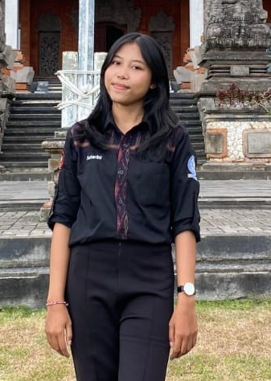

~Selamat Datang di Blog Saya~
Hi! Nama saya Ni Nyoman Sutarini, saya lahir dan besar di Bangli, 22 September 2003 dan saat ini saya sedang menempuh pendidikan di Universitas Udayana Kota Denpasar. Pendidikan saya di sini telah membuka mata saya tentang bidang studi D3 Perpustakaan dan memberi saya kesempatan untuk belajar di bidang ini.
Pendidikan
Saya menempuh pendidikan TK, SD di Bangli dan melanjutkan SMP, SMA di Karangasem. Saat ini, saya sedang menempuh kuliah di Universitas Udayana dalam bidang studi D3 Perpustakaan Fakultas Ilmu Sosial dan Ilmu Politik. Saya sangat menikmati setiap langkah dalam perjalanan pendidikan ini dan berharap untuk belajar banyak hal berharga di sepanjang jalan.
Pengalaman
Selain berfokus pada akademik saya juga memanfaatkan waktu untuk mengikuti kegiatan organisasi di kampus, saya telah terlibat dalam berbagai kegiatan dan organisasi yang telah membantu saya mengembangkan keterampilan saya beberapa pengalaman kegiatan dalam organisasi yaitu: menjabat sebagai Koordinator Bidang Internal dan Organisasi dimana bidang ini memiliki tujuan untuk menyelenggarakan kegiatan yang bersifat intern terkait dengan Himpus, mengikuti kegiatan Musma sebagai sie Humas yang bertugas menjembatani seluruh kepentingan dan urusan yang berkaitan dengan lembaga baik internal maupun eksternal serta mengikuti kegiatan UKM.
Minat dan Bakat
Diluar akademik, saya juga memiliki hobi dalam olahraga bulu tangkis. Sejak kecil saya sudah suka dengan olah raga ini dan terus mengasah keterampilan ini.
Terima kasih telah berkunjung ke blog saya. Mari kita saling menginspirasi dalam mencapai mimpi-mimpi
©2024 By Ni Nyoman Sutarini